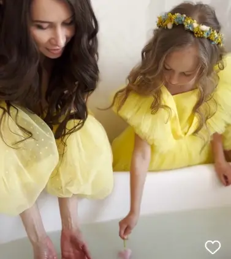

Ключевые значения планет и объектов:
СОЛНЦЕ - наш внутренний царь. Отвечает за силу личности и жизненную энергию, уверенность в себе, самооценку, понимание своей уникальности, желание себя реализовывать и заявлять о себе, умение отстаивать личные границы.

ЛУНА - внутренний ребенок. Отвечает за эмоции, восприятие, чувство безопасности и общее впечатление о Мире. Отвечает на вопрос “Какой для меня мир?” Показывает базовые потребности человека, а также то, при каких обстоятельствах он расслабляется и отдыхает.

МЕРКУРИЙ - внутренний болтун. отвечает за обучение мышление, общение, речь, обработку
и анализ информации. Особенности Меркурия
в натальной карте указывают на особенности логики, мышления и речи.

ВЕНЕРА - внутренняя эстетка. отвечает за женственность, чувства, отношения, симпатии и антипатии. А также за отношение к финансам и собственный стиль.В мужской карте отражает желаемый образ возлюбленной.

МАРС - это наш внутренний воин, который готов соперничать, сражаться, преодолевать препятствия и нацелен на победу. Отвечает за действия, активность, борьбу, конкуренцию. В женской карте – образ идеального возлюбленного.
ЮПИТЕР - наш внутренний мудрец. Задает вектор, ставит
цель, расширяет горизонты, отвечает за ценности,
мораль, принципы, амбиции. Также Юпитер связан со всем далеким, иностранным, зарубежным.

САТУРН - наш Внутренний старик. отвечает за дисциплину,
способность к самоорганизации, ощущение времени,
границы, контроль, ограничения. Также связан с ответственностью, серьезностью, трудом, профессионализмом.
УРАН - внутренний революционер. Отвечает за необычность, прогресс, все новое. Революционер, представляющий интересы своего коллектива, единомышленников. Он готов разрушить всю устоявшуюся систему во имя своих устремлений и идей.

НЕПТУН - наш Внутренний мечтатель. отвечает за воображение, мечты, веру, самопожертвование. Отражает коллективные эмоции,
чувства, доступ в коллективное бессознательное и
пространство вариантов.
ПЛУТОН - наш внутренний силовик. отвечает за преодоление трудностей, трансформации, разрушение, власть, свехконцентрацию и выдержку в
критически сложных жизненных ситуациях.
Отражает работу на пределе своих возможностей и эффект второго
дыхания.